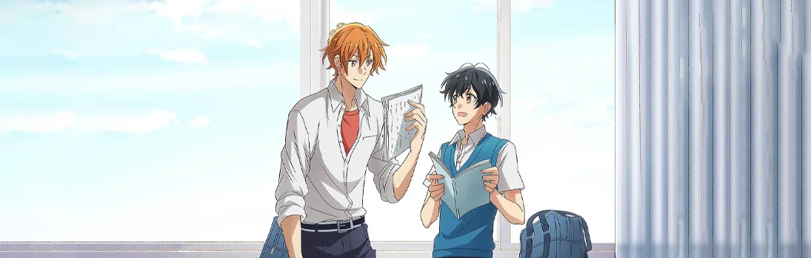

Сасаки и Мияно
Sasaki to Miyano
Ёсикадзу Мияно - весьма посредственный ученик старшей школы, чья жизнь наполнена мыслями об экзаменах, социальной активностью и типичными подростковыми проблемами. И так бы всё и шло своим чередом до самого выпуска, если бы одним летним днём в размеренные будни нашего героя не ворвался учащийся на класс выше Сюмэем Сасаки.
При первой встрече красавчик-семпай произвёл впечатление сильного, смелого и справедливого юноши, однако на деле оказался настоящей занозой в *кхм*. Мало того, что этот взбалмошный парень прилип к Мияно как жвачка, так ещё и раскрыл его тайну: страстное увлечение BL-мангой! Вот только, вопреки опасениям главного героя, Сасаки не отвернулся от него, а наоборот захотел узнать больше о своём миловидном кохае и его необычном увлечении…
Сезон:
Зима, 2022
Возрастной рейтинг:
18+
Эпизоды:
12 / 12
Статус:
Завершен
Жанры:
Сёнен-ай, Повседневность, Школа, Романтика